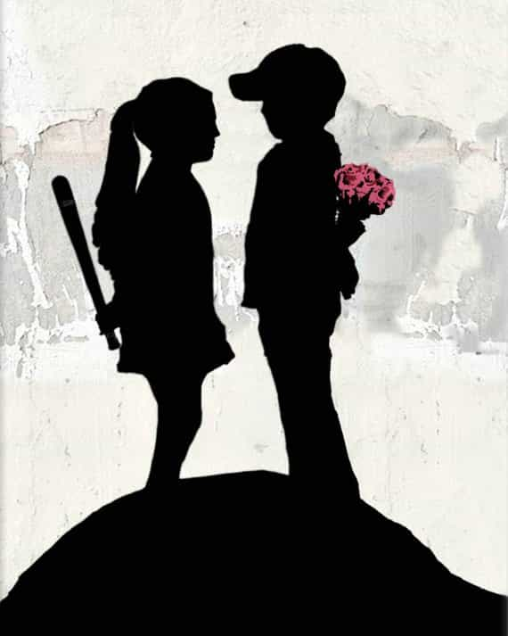

< < < Back
I Didn’t Think My Marriage Was All That Bad…Until I Found The Manosphere – Return Of Kings
My late bloomer article last July briefly highlighted the four relationships that had the most impact on my eventual discovery of the manosphere. Later in that article I gave a reader’s digest version of the three week relationship that led me to ROK. Then of course, the most devastating of the fantastic four was detailed here. A cautionary tale to be sure.
Today I’m going to talk about my marriage to a woman who had a slew of red flags and baggage that ultimately ended our relationship. The interesting thing is that I didn’t realize how bad our marriage really was until years after we split up.
After all, our divorce was as amicable as it could have been. We were both broke, didn’t have any children together, and we didn’t hate each other so things ended drama free and I’d gotten out clean.
But looking back through the prism of neomasculinity made me realize that my matrimonial stint was rife with red pill confirmations. In this, the de facto part two of three of my “ROK Origins—The Beta Chronicles of Donovan Sharpe” series, I will once again show that few of us attain success with women or with life without having gone through the fire.
Boy Meets Girl

I met the future ex-Mrs. Sharpe at a warehouse I was working at in my early twenties. It was the very first blue collar job I’d ever had and I loved every minute of it. Steel toed boots, fork lifts, heavy boxes, and eating soggy sandwiches while telling dirty jokes was something I’d never experienced before, but I liked it. This was ‘Murica at its core.
“Darcy” first caught my eye when I walked into the shipping office to check on a load that was running late. She didn’t pay me any mind because she was involved with someone else on another shift (more on this later) so I decided to “wait until the opportunity presented itself” (read: zero game). But her pretty face, ample breasts, and long curly brown hair definitely had my attention.
Over the course of the next few months or so we started talking more and more. After I found out she and her beau had parted ways I finally worked up the courage to ask her out, and to my great surprise she actually said yes.
The first date was pretty standard: sit down restaurant, conversation about ourselves, what we’re looking for in a relationship, etc. During our conversation she revealed that she lived with her parents, had a daughter that she didn’t currently have custody of, and that her ex-husband used to beat her.

I took the white knight bait hook, line, and sinker
After that first date I wanted so badly to be her Captain Save-A-Ho knight in shining armor and rescue her from the horrible and hard luck life she had led. As silly as this sounds, that’s really how I felt. My provider instinct had kicked in and with that I was all too happy to move her into my place a month later.
Other than a few minor hiccups, things actually went pretty smoothly for a couple who lived and worked together. We worked identical 12-hour shifts at work so we were literally around each other 24/7. One would think we’d be ready to kill each other at some point but it never happened. We got along pretty well and things seemed to be working out.
A few months later, I proposed to her and she happily accepted. Then exactly one year to the day of our very first date, we quit our jobs, got married and moved to Florida. For a girl from a small country town in the South it was a fairy tale romance. Right after we tied the knot at a small drive through wedding chapel she cried and said “Stuff like this doesn’t happen to girls like me.” I thought I was the luckiest man alive.
A glimpse of the crimson capsule

I missed the boat on some red pill truth
It didn’t take long for things to change after we arrived in the Sunshine State. Over a two-week period the sex dropped off almost completely, she got bitchy, and all of a sudden we didn’t seem to get along as well as we used to. I was completely blindsided and confused but I chalked it up to “cold feet.”
One morning while getting ready for work, I asked Darcy to iron my shirt. She refused. I threw a fit but she didn’t budge. I ended up ironing the shirt myself but I was seething. In my mind, the least she could do for me was assist me in preparing for work as she didn’t have a job (and wouldn’t for another few years) but she would do no such thing.
I was in the kitchen making my coffee when she started bitching and complaining about something and I took the bait. We went back and forth and after a few minutes I’d had it. I let her talk for about 30 seconds uninterrupted when I finally yelled:
“SHUT THE FUCK UP!!!!”
I had never spoken to her like that before and was prepared for a veritable verbal assault. My back was turned so I couldn’t see her facial expression (nor did I want to). I waited and waited for her to scream back but to my surprise she heeded my command. She didn’t say another word until I stormed out the door for work when she meagerly said:
“Have a good day at work, Donovan. I love you.”
I slammed the door shut and didn’t respond. I wasn’t interested in her pitiful, disingenuous attempt at making up with me after being a bitch the whole morning. I had a bad day at work because I was prepared for the worst when I got home. I swore at her, slammed the door, and didn’t verbally reciprocate when Darcy told me she loved me so I was sure I’d be smack dab in the middle of a shit storm when I walked through that door.

I had no idea this was the reason for her good behavior
When I walked into our apartment the smell of fresh roasted chicken hit me like a slap to the face. I walked into the kitchen and Darcy was dutifully preparing mashed potatoes while the chicken simmered away in the oven (she was a VERY good cook).
Just when I noticed that the television was tuned to the MLB playoffs between the Giants and Marlins, Darcy offered me a beer which I gladly but apprehensively accepted. I just couldn’t believe that she was acting this way after the way I had treated her but there she was, doing her best June Cleaver impersonation.
The entire night I waited for the other shoe to drop but it never did. Darcy was extremely affectionate the entire night and I never had an empty beer in my hand for more than a few seconds. When the game finally ended (damn you Pudge Rodriguez!) she threw herself at me and let me do every nasty, depraved thing I could think of to her.
This continued for about a week but I never apologized. Not because I knew it would constitute as breaking frame (which I didn’t actually know at the time), but because I was afraid the great treatment would stop. My beta-fied brain thought she was putting on and waiting for the right opportunity to pull the rug out from under me and that an apology would give her that chance.
I had no idea that I had actually done the right thing that morning but my dumb ass didn’t put two and two together. I thought Darcy had finally recognized what a swell guy I was, realized the error in her ways when I yelled at her, and decided to finally shape up and be a good wife.
So I went back to being the nice guy I thought she was showing appreciation for. Little did I know I’d never get another beer or a blowjob from her (at least not on the same night) for another half decade. The red pill stared me right in the face and I flat out ignored it, thinking her behavior was an accumulative appreciation of how great a husband I was.
The straw that broke the camel’s back
After the week of debaucherous ball draining, Darcy went back to her bitchy ways. The better I treated her, the worse she treated me. But instead of exploding like Mount St. Helens, I tamped down my anger and frustration.
I tried expressing my feelings which, of course, got me absolutely nowhere. I called my mother countless times asking her what I should do which, of course, got me absolutely nowhere. I tried everything I could think of to get her to be at least half way decent to me but nothing worked.
This continued for another few years until the day my father came to town. My dad and I have never had the best relationship, but I still loved him and wanted to bury the hatchet with him after five years of not speaking. So when my sister called and said he was at her place (which was about an hour from where we lived) and would be flying out in a few hours I was excited to finally put our feud behind us once and for all.
I was dressed and ready to go when Darcy decided to throw another one of her fits. She stormed around the house trying on this outfit and that, bitching about how cold it was outside, complaining that we had to drive an hour (“Why can’t you just talk to him on the phone??”), and being as difficult as she could be.
When she was finally ready to go I knew it was too late to make amends with my Dad that day. I figured we may as well go anyway because seeing my nieces and nephew would be a good consolation but the damage had been done. The entire drive I said not one single word to Darcy.
She tried making conversation, tried offering me cigarettes, and tried apologizing for taking too long but I’d had enough. Darcy knew how important this was to me but she sabotaged it without remorse. To this day I still have no idea why on earth she did this to me.
During the hour drive to my sister’s I thought of all the times and ways Darcy had shit on me. I thought about her crappy treatment despite my best efforts to please her, the physical and mental sacrifices I made to provide her as comfortable a life as I could (I was always working 2 jobs) the year and change we didn’t have sex because we were in the process of joining the Catholic Church (“We don’t need to live in sin Donovan!”), her lack of support when I wanted to start my own business, her constant complaining, her lack of appreciation, and on and on and on.
I was through giving a shit
In the months that followed Darcy went back into June Cleaver mode but that only confirmed my decision to end the marriage. I told my mother “I don’t want to be with a woman I have to treat like shit to be treated well.”
White Knight to the fucking end.
What did I learn?

After all that I was still a white knight
Nothing—at least not yet. I was every bit the mangina I was after our divorce was finalized as I was the day I said “I do.” Our divorce was quick and uncomplicated and in the end, we didn’t hate each other. We chalked it up to the fact that we just weren’t right for each other, that it was nobody’s fault, and that we were better off going our separate ways.
Though I didn’t experience the anguish I went through in my breakup with Amy, I’d be lying if I said I wasn’t saddened by our split because I’d known this woman for the better part of seven years. And even though our marriage sucked and I was balls deep in Amy on the regular at that point in time, it was still a bummer that it had all come to an end.
I’m not going to get into the chronological time line of my journey and subsequent discovery of the red pill because it’s already well-documented. But after about a month of cramming neomasculine knowledge into my tiny brain, Darcy’s red flags became as clear as day:
1. She didn’t have custody of her daughter: I didn’t think much of this when she revealed this to me on our first date because I was just happy to be liked by a pretty girl. Her young daughter was in the custody of her ex-husband but I never pressed her on the reason she didn’t because I was largely unaware of the court system’s bias toward women. However, the truth came to light when she later revealed that…
2. She was a drug addict: During our first month together she told me she had “dabbled” in crystal meth for “a while” and that the court system had “screwed her.” The details were fuzzy but the bottom line is that I now knew she had to be a terrible mother because women routinely receive favor from judges nationwide, even when they are drug addicts.
3. Her daughter’s father was not her ex’s: No need to elaborate here. She cheated on her first husband and allowed her paramour to impregnate her and I didn’t need red pill knowledge to know this was fucked up. In hindsight it’s probably the reason he beat her up—which was probably an exaggeration in and of itself, as society’s definition of domestic abuse is as loose as the sluts who claim it.

No two ways about it
4. She made her rounds at work: I knew I certainly wasn’t the first dude there who’d slayed her but the longer we dated, the more aware I became of just how many men she had fucked at that warehouse. Despite the warnings from my co-workers that she was a raging slut, my stupid ass wifed her up anyway.
5. She had her ex’s initials tattooed on her: Yep, another tattoo I foolishly ignored. According to her, she got the tattoo as a going away present to him before he went back to his home country but that didn’t stop her from writing him and telling him that she still loved him despite sharing a residence with me. It should come as no surprise that she never got it covered up or removed after we got married when I asked her to.
6. It was too easy to marry her: I’m a decent looking guy but other than that I had nothing going for me. No game, no money, no nothing. I was just another forklift operator. Yet, she offered no resistance to moving in with me, a huge step for a relationship barely a month old, and didn’t object to marrying me when I popped the question less than a year after we started dating.
Looking back, it’s now plainly obvious that she knew she was closing in on The Wall (she was 26 when I married her), and needed a sucker who was unaware of her past to wife her up before he found out just how damaged a woman she really was. That sucker was me.
Conclusion
Like I said before, I had always thought that my marriage to Darcy wasn’t all that bad but the moment I discovered the manosphere all of that changed. The bottom line is that marrying a divorced drug addict who’d committed paternity fraud in her last marriage was on me.
These days Darcy seems to be doing okay for herself. Her brother and I are still cool, so we still talk from time to time. According to him husband number three is an accountant who supposedly makes six figures. The only catch is that he has five children so I’m sure Darcy’s having the time of her life. Her daughter is now pregnant and baby daddy is apparently a wife beater too. Imagine that.
Readers may think “Well I’d never be so stupid as to put a ring on a woman like that!” but like I said in the caption, hindsight, especially the crimson capsule variety, is always 20/20. I’m just glad I didn’t have a pound of flesh for her to take.
Read Next: How Forgetting My Game Because Of A Woman Almost Ruined My Life